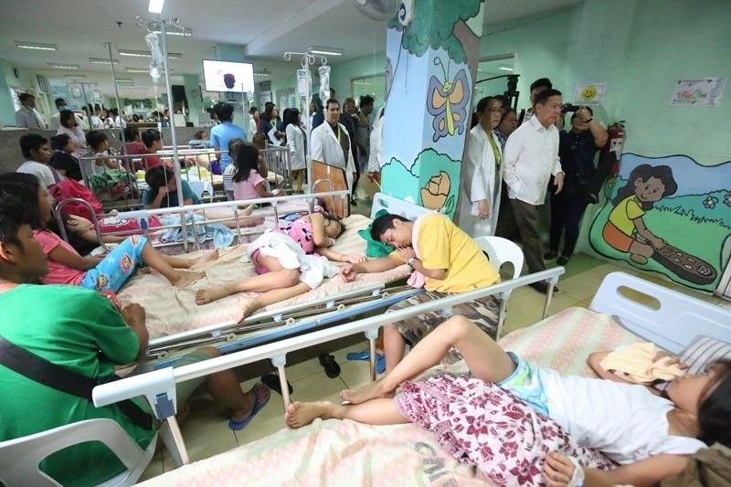
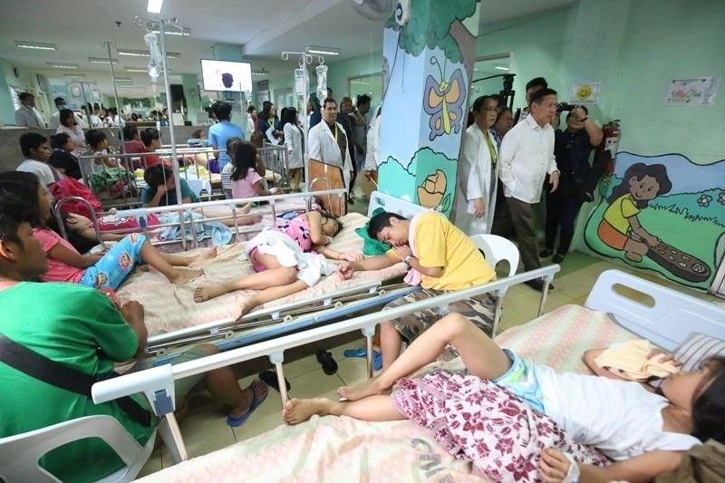

- Click each photo to learn more about each topic.
Health Care in the Philippines

Effects of Health Care Unavailability and Ways to Resolve this

According to Merriam-Webster(n.d.), Health care, a noun, is “the effort made to maintain or restore a patient's physical, mental, or emotional well-being”. It is conducted by trained and licensed professionals who apply their knowledge to treat or prevent disease. Hence, it is a fundamental factor in our lives that needs to be accessible to all members of society.
Health Care in the Philippines
Effects of Health Care Unavailability and Ways to Resolve this
